先用这条线索串起全书
机械振动：一个质点随时间怎样运动 机械波：振动如何在空间传播 光学：相位叠加、波前分布与偏振方向 量子：能量量子化，波函数给出概率
展开：从局部运动到空间分布
原理与公式
振动用 x(t) 描述一个质点；波用 y(x,t) 描述一排质点。固定 x 看振动，固定 t 看波形。
用法与易错点
遇到两列波先比较同一点的到达相位；遇到量子题先区分 ψ、概率密度和区间概率。它们都用到波的数学，但观测量不同。
按手机阅读重新排版，保留笔记图解、公式和勘误。新增两页手写笔记已整理在第45—49节。正文可直接放大；图表可点开看大图。
机械振动：一个质点随时间怎样运动 机械波：振动如何在空间传播 光学：相位叠加、波前分布与偏振方向 量子：能量量子化，波函数给出概率
振动用 x(t) 描述一个质点；波用 y(x,t) 描述一排质点。固定 x 看振动，固定 t 看波形。
遇到两列波先比较同一点的到达相位；遇到量子题先区分 ψ、概率密度和区间概率。它们都用到波的数学，但观测量不同。
x=A cosθ θ=ωt+φ，a=−ω²x
同一相位决定位置、速度和加速度。 x最大时，v=0；x=0时，|v|最大。 由初始位置求cosφ，再用速度方向选象限。
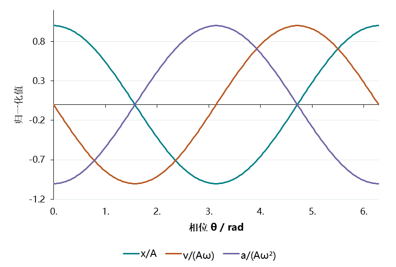
设 x=A cos(ωt+φ)，则 v=−Aω sin(ωt+φ)、a=−ω²x。由 x₀=A cosφ、v₀=−Aω sinφ 得 A=√[x₀²+(v₀/ω)²]。
若 x₀>0、v₀<0，则 cosφ 和 sinφ 都为正，φ 在第一象限。只用位移无法区分质点正向哪边运动。
ω=2π/T
同频振动才能用固定的相位差比较。 C=ΣAᵢ cosφᵢ S=ΣAᵢ sinφᵢ A=√(C²+S²) φ=atan2(S,C) 相量投影给出瞬时位移。
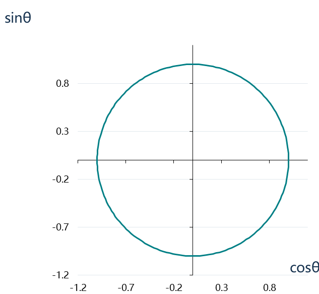
反相条件：Δφ=(2k+1)π，k为整数。
在相量图上画长度 A 的矢量，初始角为 φ，以角速度 ω 逆时针转动。横轴投影是 x=A cos(ωt+φ)，横轴投影向左移动时 v<0。
经过平衡位置向正方向运动时，相量在下方，φ 可取 −π/2。两个同频相量以同一速度转动，夹角不变，才能用一个固定的矢量和表示合振动。
E=½mω²A²
总机械能保持不变。 平衡位置：动能最大。 两端位置：势能最大。 Eₖ=Eₚ时：|x|=A/√2。
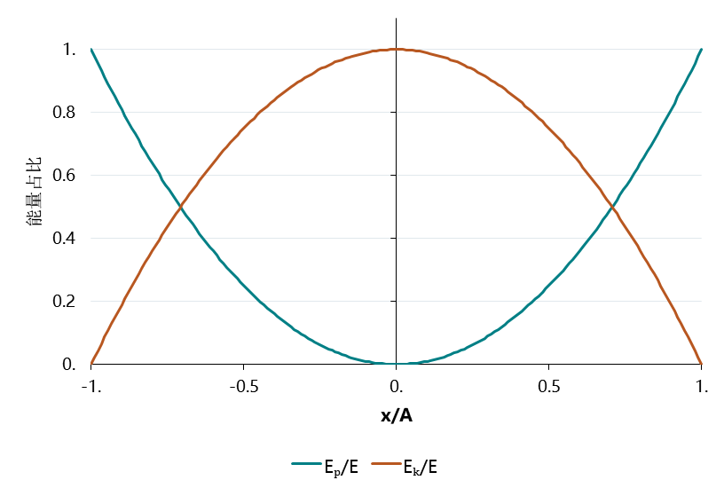
A 是振幅，x 是瞬时位移，范围为 −A 到 +A。只有在两端才有 |x| = A，此时动能为零。
Eₚ/E = x²/A²。Eₖ = Eₚ 时各占总能量的一半，所以 x² = A²/2，即 x = ±A/√2。
若 x = A cos(ωt + φ₀)，则 cos²(ωt + φ₀) = 1/2，所以 ωt + φ₀ = π/4 + jπ/2（j 为整数）。每周期有四次。
相位 π/2 + jπ 对应 x = 0，势能为零、动能最大。例如 A = 10 cm 时，能量相等发生在 x ≈ ±7.07 cm。
弹簧：F=−kx → ω=√(k/m) 单摆：sinθ≈θ → ω=√(g/l) 碗底小球：弧长s=Rθ → ω=√(g/R) 初始不在平衡位置时，不能直接把v₀/ω当作位移振幅。
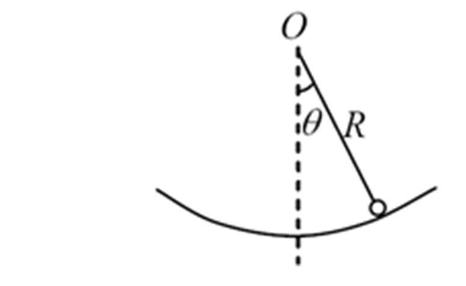
一般振幅：A=√[x₀²+(v₀/ω)²]；小角度近似须 |θ|≪1。
先以平衡位置为零点，再把运动方程整理成 x″=−ω²x。竖直弹簧的重力与平衡伸长产生的弹力抵消，剩余力为 −kx，所以 ω=√(k/m)。
单摆满足 θ″=−(g/L)sinθ，小角度下 sinθ≈θ，得到 ω≈√(g/L)。物理摆用 Iθ″≈−mgdθ，d 是转轴到质心的距离，因此 ω≈√(mgd/I)。
A²=A₁²+A₂² +2A₁A₂ cosΔφ
同相：A最大=A₁+A₂ 反相：A最小=|A₁−A₂| 反相不一定完全抵消，还要A₁=A₂。
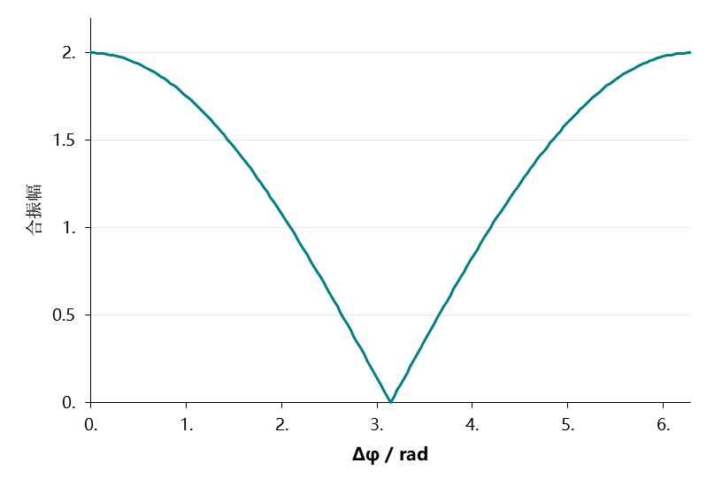
把两个振动写成 A₁ cos(ωt + φ₁) 和 A₂ cos(ωt + φ₂)，将旋转矢量的两个分量分别相加。
X = A₁ cosφ₁ + A₂ cosφ₂
Y = A₁ sinφ₁ + A₂ sinφ₂
A cosφ = X，A sinφ = Y，所以 X ≠ 0 时 tanφ = Y/X。用 X、Y 的符号确定象限，或直接用 φ = atan2(Y, X)。
X = 0 且 Y ≠ 0 时，φ 为 ±π/2（符号与 Y 相同）。X = Y = 0 时，合振幅为零，初相位无定义。
u=fλ=ω/k
沿+x传播：ωt−kx+φ 沿−x传播：ωt+kx+φ 波速u描述波形传播。 质点速度是∂y/∂t，两者不同。
沿 +x 传播，三式的相位相同。沿 −x 传播时，把含 x 的项前面的减号改成加号。
y(x,t) = A cos[ω(t − x/u) + φ₀]
= A cos[2π(t/T − x/λ) + φ₀]
= A cos(ωt − kx + φ₀)
u = λ/T = fλ，ω = 2π/T，k = 2π/λ = ω/u。
已知 x₀ 处的振动 y₀(t)。沿 +x 传播时，y(x,t) = y₀(t − (x − x₀)/u)。沿 −x 传播时，改为 y₀(t + (x − x₀)/u)。
固定 x 是振动图，相邻波峰隔 T。固定 t 是波形图，相邻波峰隔 λ。
同一时刻，令 Δx = x₂ − x₁，Δφ = φ₂ − φ₁。沿 +x 传播时 Δφ = −kΔx，沿 −x 时 Δφ = +kΔx。
记波函数的相位为 θ。质点速度 vᵧ = ∂y/∂t = −Aω sinθ，质点加速度 aᵧ = −ω²y。沿 +x 时 vᵧ = −u ∂y/∂x，沿 −x 时 vᵧ = +u ∂y/∂x。
一维波动方程为 ∂²y/∂x² = (1/u²) ∂²y/∂t²。能量与波强见下一节。
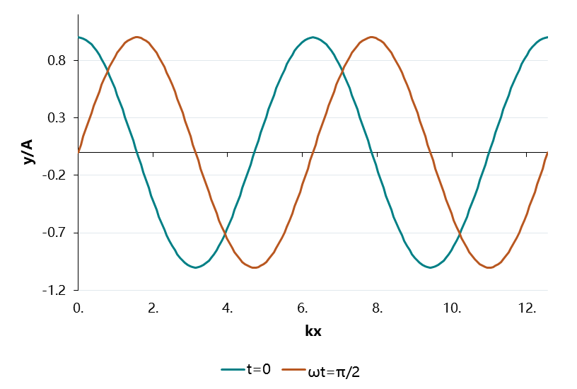
w̄=½ρω²A² I=w̄u
理想弦上简谐行波： wₖ=wₚ∝sin²(ωt−kx+φ) 某处位移极值时，局部两项都可为零。 平均能量密度与A²、ω²成正比。
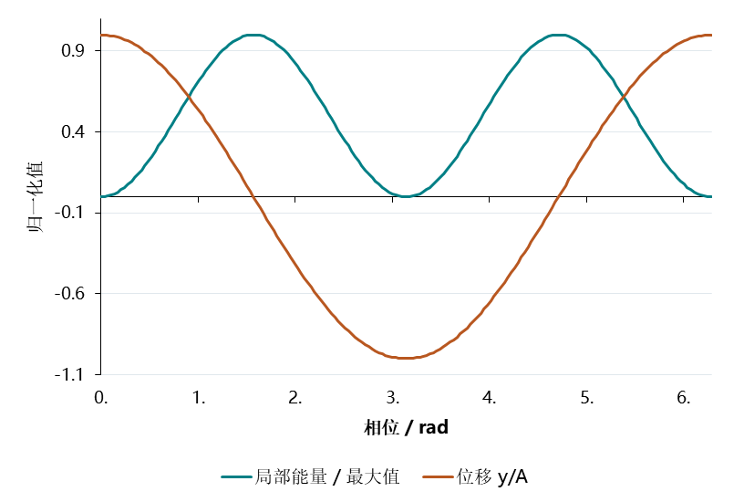
这与孤立弹簧振子的动能、势能交替不同。
设理想弦上的小振幅简谐波沿 +x 传播，y = A cosθ，θ = ωt − kx + φ，u = ω/k。取体积 ΔV 的一小段弦，质量为 ρΔV。
动能取决于质点横向速度 ∂y/∂t = −Aω sinθ。
Eₖ = ½ρΔV(∂y/∂t)² = ½ρΔV A²ω² sin²θ。
弹性势能取决于局部斜率 ∂y/∂x = Ak sinθ。弦越斜，弦段相对于水平时的伸长越大。
Eₚ = ½ρΔV u²(∂y/∂x)² = ½ρΔV A²ω² sin²θ，其中 uk = ω。
波峰和波谷处，质点瞬时速度和局部斜率都为零，所以两种能量密度同时为零。质点经过平衡位置时，两种能量密度同时达到最大。
在整数个周期的时间 Δt 内，波前进 uΔt，通过截面 S 的能量为 w̄SuΔt。除以 SΔt，就得到波强 I = w̄u。
平面行波的声阻抗：Z=ρu。 质点速度幅值：v最大=ωA。 声压幅值：p最大=Z v最大。 平均声强：I=½Zω²A²=p最大²/(2Z)。 比较介质中的声强时，不能只比较位移振幅。
平面简谐声波的质点速度振幅 vₘ=ωA，声压振幅 pₘ=Zvₘ，Z=ρu。周期平均声强 I=½pₘvₘ=½Zvₘ²=pₘ²/(2Z)。
先看题目给哪种振幅。同频且位移振幅相同，I∝Z；若声压振幅相同，I∝1/Z。
Δφ = φ₂ − φ₁ − 2π(r₂ − r₁)/λ
φ₁、φ₂ 是两波源的初相位，r₁、r₂ 是它们到观察点 P 的路程。初相位差和路程差都按 2 减 1 计算。 同相增强；反相减弱。 I=I₁+I₂+2√(I₁I₂) cosΔφ 要求相干且偏振等条件相容。
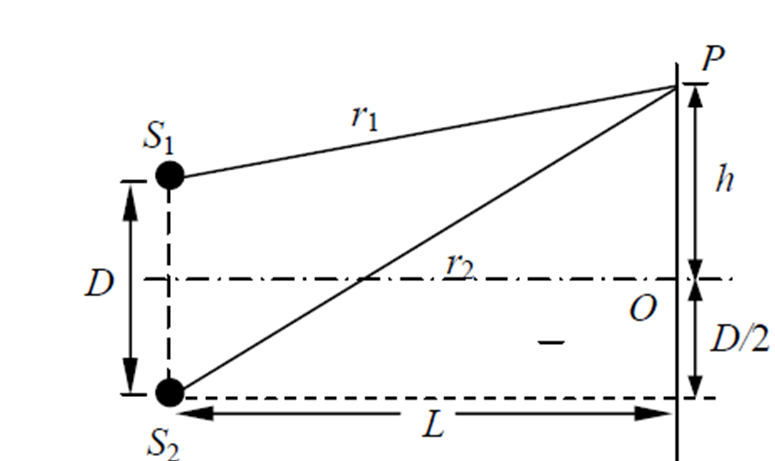
两列波到 P 的相位分别为 ωt+φ₁−2πr₁/λ、ωt+φ₂−2πr₂/λ。第二式减第一式，就得到你笔记里的 Δφ。合振幅平方为 A₁²+A₂²+2A₁A₂ cosΔφ。
Δφ=2nπ 时加强，Δφ=(2n+1)π 时减弱。若两源反相且路程差为 λ/2，两次 π 的相位差可以抵消，P 点反而加强。
自由端：位移反射不倒相。 固定端：位移反射倒相π。 反射点x=L时，反射路径包含2L−x。 不能只把入射式中的x改号。
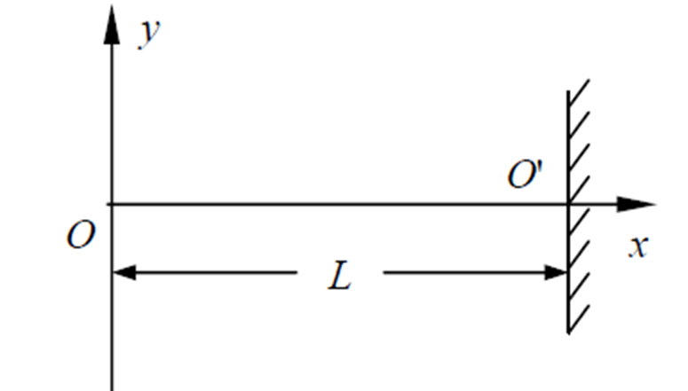
入射波从 x=0 向 x=L 传播，在 L 反射后回到 x≤L。反射路径长度是 L+(L−x)=2L−x，所以反射相位含 ω[t−(2L−x)/u]。
自由端的位移反射不倒相。固定端另加 π，代入 x=L 时，入射和反射位移正好抵消，可用来检查符号。
等幅反向行波叠加： y=2A cos(kx) cos(ωt) 波腹：x=nλ/2 波节：x=(2n+1)λ/4 相邻同类点间距λ/2。
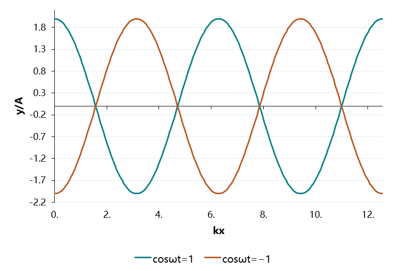
若空间因子换为sin(kx)，波节与波腹的位置交换。
同一根弦上，两列振幅和频率相同的行波反向传播。按笔记的例子，取初相位为零：
y₁ = A cos[ω(t − x/u)]（沿 +x）
y₂ = A cos[ω(t + x/u)]（沿 −x）
第二列波的 x/u 前是加号。用余弦和差化积，再代入 ω/u = 2π/λ：
y = y₁ + y₂ = 2A cos(2πx/λ) cosωt
固定 x，该处质点随 cosωt 做简谐振动，振幅为 |2A cos(2πx/λ)|。波节和波腹的位置只由 x 决定。
n 为整数。由 x = 0 向右依次是：波腹（0）→ 波节（λ/4）→ 波腹（λ/2）→ 波节（3λ/4）。相邻波节或相邻波腹相距 λ/2，相邻波节和波腹相距 λ/4。
两个相邻波节之间，cos(2πx/λ) 的符号相同，质点一起向上、一起向下，振幅随位置而变。跨过一个波节，空间因子的符号翻转，相邻两段的相位差为 π。
例如 x = 0 和 x = λ/2 都是波腹，位移分别为 2A cosωt 和 −2A cosωt。一个向上到顶时，另一个正好向下到底。
f′=f (u±v接)/(u∓v源)
接收者向声源运动，分子增大。 声源向接收者运动，分母减小。 符号要按每次传播方向选，不能只背“靠近加号”。
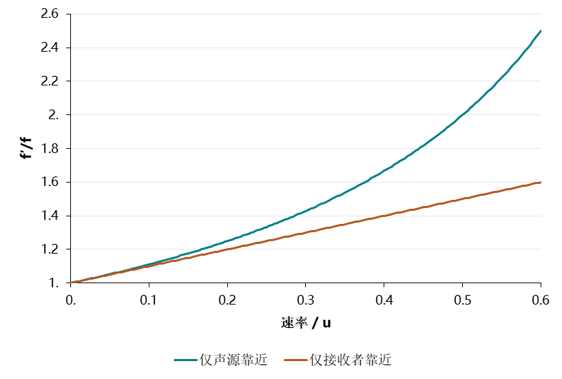
静止介质中，波源靠近接收者时，前方波长缩短为 (u−v源)/f；接收者迎着波来时，每秒扫过的距离是 u+v接。两者相除得到接收频率。
取 u=340 m/s、速度都是 34 m/s 时，仅接收者靠近得到 1.10f，仅波源靠近得到 f/0.90。两种运动都使频率升高，但倍数不同。
本次考试明确不考拍。此页含拍频内容，跳过相关推导。
远离固定声源的运动反射体： f回=f₀(u−v)/(u+v) 拍频：f拍=|f₀−f回| v=u f拍/(2f₀−f拍) 这是原作业反射回声题所需补充。
若收发端静止、反射体沿传播线靠近，第一次把反射体当移动接收者，得到 f₁=f(u+v)/u。第二次把它当移动波源，原处收到 f₂=f₁u/(u−v)。
所以靠近时 f₂=f(u+v)/(u−v)，远离时交换正负号。若比较回波和原信号，差频为 |f₂−f|。拍本次不作为考点。
光程L=Σnᵢlᵢ 相位差：Δφ=2πΔL/λ₀ 云母替代同厚空气： ΔL=(n−1)e 先比较总光程，再判断中央条纹移动。
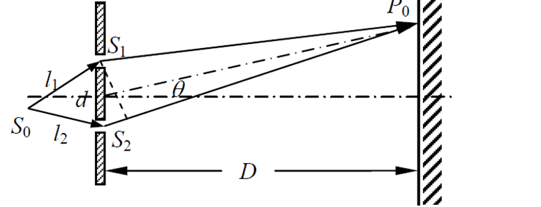
在折射率 n 的介质中，频率不变，波长变为 λ₀/n。走过长度 l 积累相位 2πl/(λ₀/n)=2πnl/λ₀，所以可以用真空波长和光程 nl 统一计算。
分段路径把各段 nl 相加，再做两路之差。例如在一路中用厚度 e 的玻璃替换同厚度空气，新增光程约为 (n−1)e。
Δx=λD/d
近轴条件：Δr≈dx/D 明纹：dx/D=mλ 暗纹：dx/D=(m+½)λ 增大λ或D，条纹变疏；增大d，条纹变密。
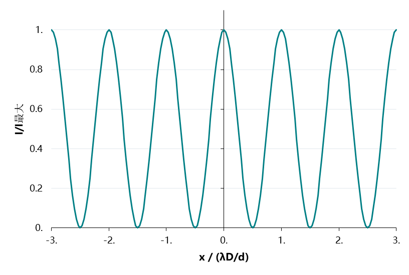
远屏上离中心 x 的点对应小角度 θ≈x/D，两缝的路程差约为 d sinθ≈dx/D。等相干光源的明纹满足 dx/D=mλ，暗纹满足 dx/D=(m+½)λ。
明纹坐标 xₘ=mλD/d，相邻明纹差 Δx=λD/d。缝距越大，条纹越密。中心为明纹要以两缝初相同、无额外光程差为前提。
传播光程差：2ne cosr 只有一束反射倒相： 反射明纹 2ne cosr=(m+½)λ 两束都倒相或都不倒相： 反射明纹 2ne cosr=mλ 同为低→高反射时，两次π相变抵消。
不能把“+λ/2”当成所有薄膜的固定附加项。
两束反射光的传播光程差为 2ne cos r，r 是膜内折射角。反射处从低折射率射向高折射率时，按课堂薄膜模型计入 π 的反射相位变化。
若两束只有一束发生 π 跳变，反射明纹满足 2ne cos r=(m+½)λ₀，暗纹满足 2ne cos r=mλ₀。若相对跳变为零，明暗条件互换。先画两条反射路径再套条件。
小角度e≈xθ。 同类条纹厚度差：λ/(2n) 条纹间距：Δx≈λ/(2nθ) 从厚度0到D，间隔数2nD/λ。 若计两端暗纹中心，中心数可能多1。
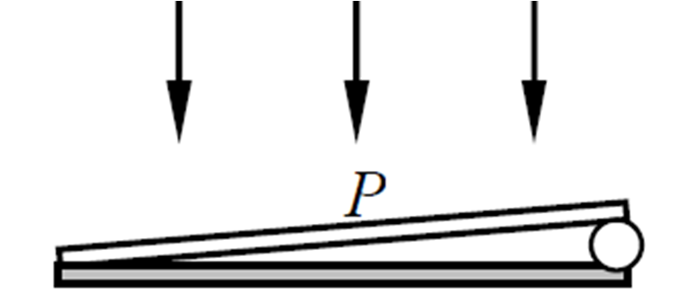
先分清题目要“条纹间隔数”还是“条纹中心条数”。
小劈角 α 下，距接触线 x 处的膜厚 e≈αx。垂直入射、反射有一次相对半波损失时，暗纹满足 2ne=mλ₀。
相邻暗纹的厚度差是 λ₀/(2n)，水平间隔就是 λ₀/(2nα)。等厚处属于同一条纹；劈角变大时条纹变密。
接触且反射一次半波损失： e≈r²/(2R) 暗环：rₘ²=mλR/n 明环：rₘ²=(m+½)λR/n 有初始间隙时，要把间隙厚度加进e。
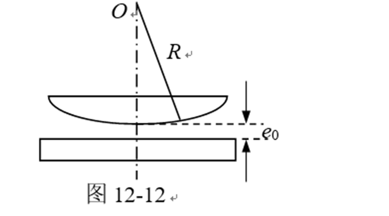
球面曲率半径为 R，离接触点 r 处的膜厚满足 r²=2Re−e²≈2Re。反射暗环在一次相对半波损失下满足 2ne=mλ₀，因此 rₘ²=mλ₀R/n。
相邻暗环的 r² 等差，半径本身不等差，所以外圈更密。空气膜中若用直径 D 测 R，可用 Dₘ₊ₚ²−Dₘ²=4pλ₀R，减少环序或接触偏差的影响。
反射镜移动d：光程改变2d。 条纹移动N条：2d=Nλ 气室长l，折射率改变Δn： Nλ=2lΔn 双程来自光束往返，别漏掉因子2。
迈克耳孙干涉仪的每一臂都要往返。某镜移动 Δd 时，该臂几何路程改变 2Δd；在空气中近似等于光程改变量。
每改变一个波长就有一个周期的明暗变化。数同类条纹通过固定位置的次数 N，得到 λ≈2Δd/N。例如 50 μm 对应 200 条，则 λ≈500 nm。
I/I₀=(sinβ/β)²
暗纹：a sinθ=mλ，m≠0 中央主极大在θ=0。 中央宽度≈2fλ/a。 侧极大精确满足tanβ=β； β≈(m+½)π只是近似。
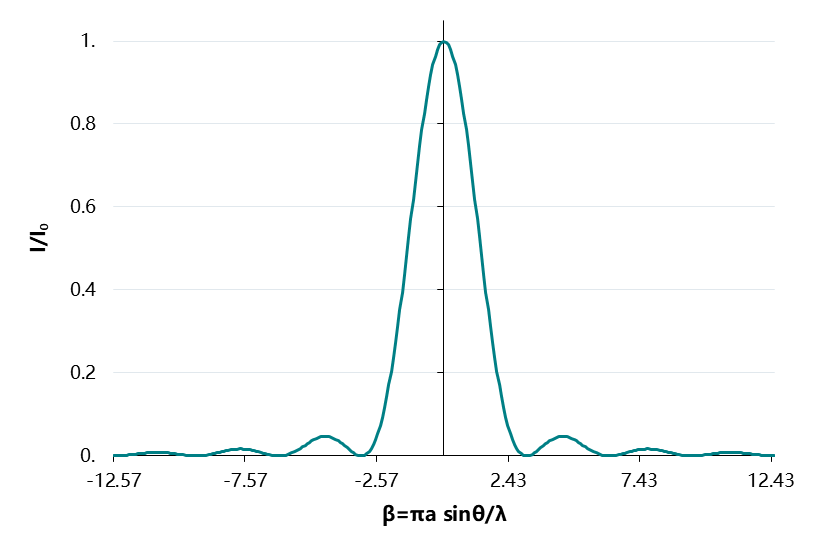
缝宽 a，边缘到远场方向 θ 的路程差为 a sinθ。当它等于 λ 时，把缝分成两半，对应点相差 λ/2，成对抵消。一般暗纹满足 a sinθ=mλ，m 为非零整数。
中央主极大夹在 ±1 级暗纹之间，近轴屏上宽约 2Dλ/a。θ=0 时用 sinβ/β 的极限 1；侧明纹精确位置由 tanβ=β 的非零根决定。
圆孔的瑞利判据： θ最小≈1.22λ/D 口径越大，衍射越弱，分辨角越小。 波长越短，也更容易分辨。 小角度下，两目标间距s≈Lθ最小。
圆孔直径 D，单个点像第一暗环的角半径约为 1.22λ/D。一个点像的中央亮斑落在另一个点像第一暗环时，达到瑞利判据。
若两目标间距 s、距离 L 很远，可用角距 s/L 与 1.22λ/D 比较。增大孔径使衍射斑变窄，分辨能力提高。
有限屏：|sinθ|<1
主极大：d sinθ=mλ。 缺级：主极大同时满足 a sinθ=jλ，j≠0。 先筛选允许整数级次，再删缺级。
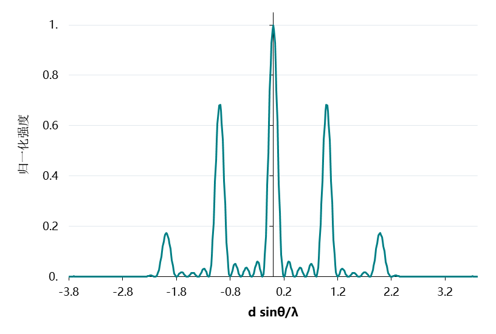
sinθ=±1是90°掠射，不能计作有限远屏上可见条纹。
相邻狭缝相差一个整数波长时同相，光栅主峰满足 d sinθ=mλ。单缝宽 a 的包络暗纹满足 a sinθ=qλ（q≠0）。
若某个 m 同时满足 m a/d=q，就缺级。例如 d=3a 时，±3、±6 等本来允许的级次会缺失。还要检查 |sinθ| 是否在接收范围内。
马吕斯定律
自然光经理想偏振片：I=I₀/2。 线偏振光过检偏器： I=I入 cos²θ。 连续多片时，逐片相乘，不只看首末夹角。
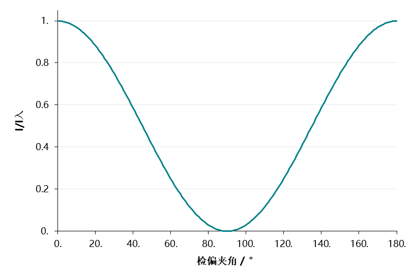
理想偏振片只透过沿透振轴的电场分量。线偏振光与轴夹角为 θ 时，电场投影为 E cosθ，强度随电场振幅平方变化，因此 I=I入 cos²θ。
自然光过第一片取平均得到 I₀/2，之后按相邻透振轴夹角逐片乘。例如 0°、45°、90° 三片得到 I₀/8。
tan iᴮ=n₂/n₁ iᴮ+r=90°。 自然光仍有s偏振反射光； 此时反射光为完全线偏振。 “没有反射光”只对p入射分量成立。
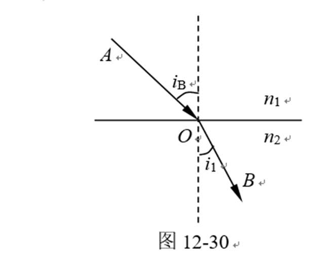
布儒斯特条件下反射光和折射光互相垂直，iᴮ+r=90°。代入 n₁sin iᴮ=n₂sin r 得 tan iᴮ=n₂/n₁。
反射光只剩电场垂直于入射面的 s 分量。p 分量在入射面内；自然光的折射束通常仍含两种分量。
温度越高：峰值向短波移动
维恩位移：λ最大T=b。 斯特藩定律：M=σT⁴。 M是对所有波长积分的总出射度。 Mλ是光谱分布，不能直接写成σT⁴。
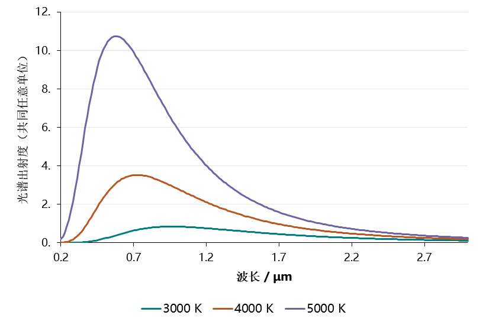
维恩定律 λ峰T=b 给按波长画的谱峰位置。斯特藩—玻尔兹曼定律 M=σT⁴ 给单位面积总辐射功率，是光谱出射度对波长的积分。
温度翻倍，峰值波长减半，单位面积总辐射变为 16 倍。按频率画谱时峰位应从频率谱求，不能直接拿 c/λ峰。
光谱出射度（按波长）： Mλ(T)=2πhc² / {λ⁵[exp(hc/λkᴮT)−1]} 能量子：ε=hν；振子能量按n hν变化。 对所有波长积分得到M=σT⁴；求峰值位置得到λ最大T=b。 常数：h为普朗克常数，kᴮ为玻尔兹曼常数。
频率 ν 对应的能量子是 hν。在热平衡下，高频量子所需能量大，热激发概率低，谱中出现 1/[exp(hν/kBT)−1] 的因子。
短波对应高频，指数因子使短波辐射快速减弱。按波长给出的光谱出射度要在波长上积分，才能得到总出射度。
最大初动能：K最大=hν−W。 截止频率：ν₀=W/h。 遏止电压：eU截止=K最大。 频率低于阈值，再强也不发射。 高于阈值时，增强光强通常增大饱和电流。
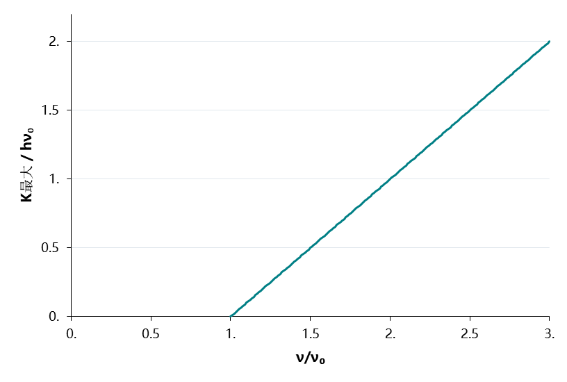
单个光子提供 hν，先克服逸出功 W，余下最多成为电子动能 Kₘₐₓ=hν−W。截止频率 ν₀=W/h，反向遏止电压的大小满足 eUₛ=Kₘₐₓ。
同频率且超过阈值时增大光强，通常提高饱和电流，遏止电压不变。换频率时先用能量式比较横轴截点，再按题给光电子数判断电流。
E=hν=hc/λ，p=E/c=h/λ。 光子静质量为0。 康普顿位移： Δλ=(h/mₑc)(1−cosθ)。 散射角越大，波长增长越多。
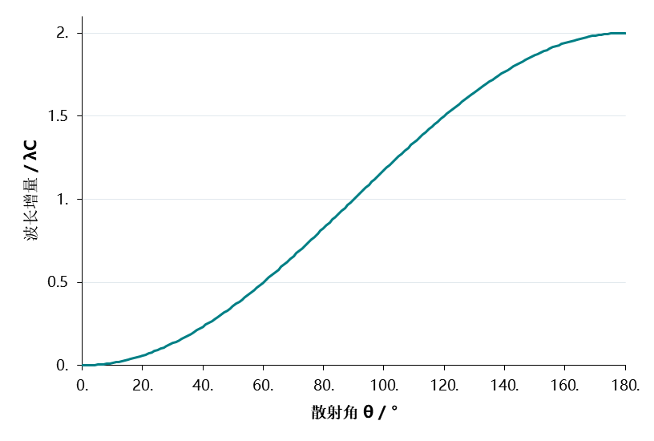
不要在v=c时，把静质量0代入有质量粒子的相对论质量公式。
光子同时带能量 hc/λ 和动量 h/λ。康普顿散射中，对初始静止自由电子联立能量、动量守恒，得 λ′−λ=h(1−cosθ)/(mₑc)，θ 是光子的散射角。
正向散射波长改变量为零，背向散射改变量最大，为 2h/(mₑc)。散射光波长变长时，减少的光子能量转给电子。
本次考试明确不考氢原子光谱与玻尔理论，此页不列入复习任务。
氢原子：Eₙ=−13.6/n² eV。 rₙ=a₀n²。 跃迁：hν=|Eᵢ−E𝒇|。 n→∞时，E→0⁻是电离阈值； E≥0进入连续谱。
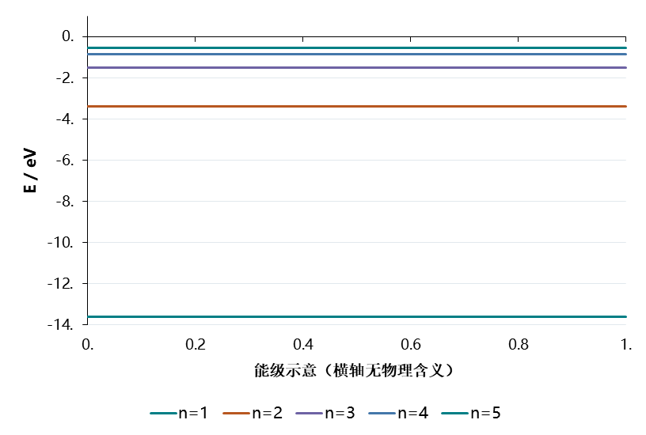
在玻尔的氢原子模型里，Eₙ=−13.6 eV/n²。由高能级到低能级发射光子，hν=E高−E低；由低到高则吸收同样的能量。
例如 n=3 到 n=2，要用 E₃−E₂ 取正的光子能量，再由 λ=hc/(E₃−E₂) 求波长。此节按书面通知作扩展。
λ=h/p。 低速：p≈√(2m₀K)。 相对论： pc=√[K(K+2m₀c²)]。 K接近静能时，不能继续套经典动量。
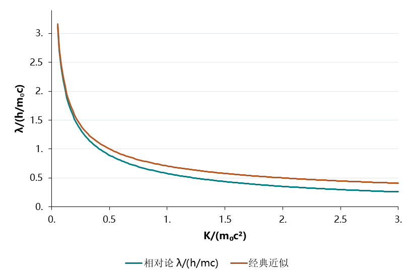
粒子由静止经过使其加速的电势差，动能 K=|q|U。非相对论时 p=√(2mK)，所以 λ=h/√(2m|q|U)。
当 K 与 mc² 相比不可忽略时，用 pc=√[K(K+2mc²)]。电子在低速近似下加速电压变为四倍，波长变为一半。
Δx、Δp指标准差。 ΔxΔp≥ħ/2。 概率必须积分 |ψ|²，不能把不确定区间统一说成50%。 高斯分布±1σ内约68.27%。
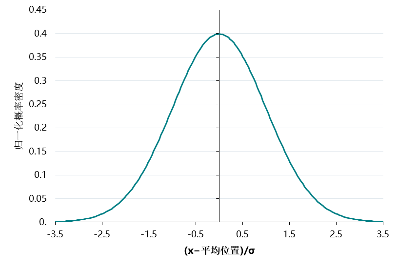
宏观情况下相对不确定度可很小，但ΔxΔp仍不小于ħ/2。
单一波数的平面波遍布空间；把许多不同波数的波叠加，才能把波包局限在窄区间。由于 p=ħk，波数范围变宽会使动量分布变宽。
ΔxΔpₓ≥ħ/2 中两项都是标准差，且必须是对应方向。例如把 Δx 压到原先一半，Δpₓ 的下限变为两倍。
ψ=Aeⁱ⁽ᵏˣ⁻ωᵗ⁾。 实部、虚部都随相位变化。 |ψ|²=|A|²保持不变。 一般不能只取余弦实部，代替原来的复波函数。
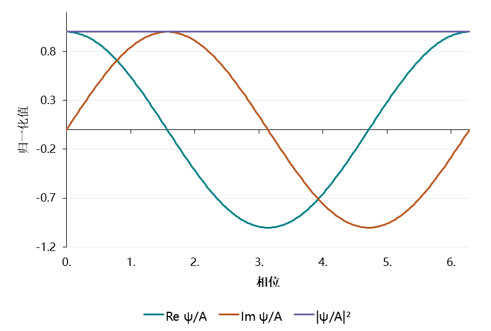
在一维，位置概率密度是 ρ(x,t)=ψ*ψ=|ψ|²。若 ψ=a+ib，则 |ψ|²=a²+b²，测到粒子位于区间 [a₀,b₀] 的概率是对该区间积分。
整体乘 eⁱᵅ 不改变概率密度。叠加时应先把波函数相加再取模平方，因为相对相位会通过交叉项影响概率。
先计算 |ψ|²，再积分。 全空间：∫|ψ|² dx=1。 区间概率：P(a<x<b)=∫ₐᵇ|ψ|²dx。 位置平均：⟨x⟩=∫x|ψ|²dx。 波函数本身可为负或复数，概率密度始终非负。
写 ψ=Cf(x)，先求 |ψ|²=|C|²|f(x)|²，再对整个允许区间积分令其等于 1，最后取正实常数 C=1/√∫|f|²dx。
例：ψ=Cx（0≤x≤L，区间外为零），由 |C|²L³/3=1 得 C=√(3/L³)。求左半区间概率时，再积分到 L/2，得到 1/8。
含时方程：iħ∂Ψ/∂t=−(ħ²/2m)∇²Ψ+UΨ。 定态分离：Ψ(r,t)=ψ(r) exp(−iEt/ħ)。 一维定态：−(ħ²/2m)ψ″+Uψ=Eψ。 三维定态：∇²ψ+(2m/ħ²)(E−U)ψ=0。 需要同时满足边界条件、连续性和归一化。
笔记三维方程的分母应为ħ²，不能漏平方。
当势能不随时间变化，可分离为 Ψ(x,t)=ψ(x)e^(−iEt/ħ)。代回含时方程后得到定态方程 −ħ²ψ″/(2m)+Uψ=Eψ。
单个定态的时间因子模为 1，所以概率密度不随时间变。按考试通知，复习时侧重波函数意义、概率密度和归一化。
0<x<L：ψₙ=√(2/L) sin(nπx/L)。 Eₙ=n²π²ħ²/(2mL²)，n=1,2,… 阱壁处ψ=0；最低能量仍大于0。
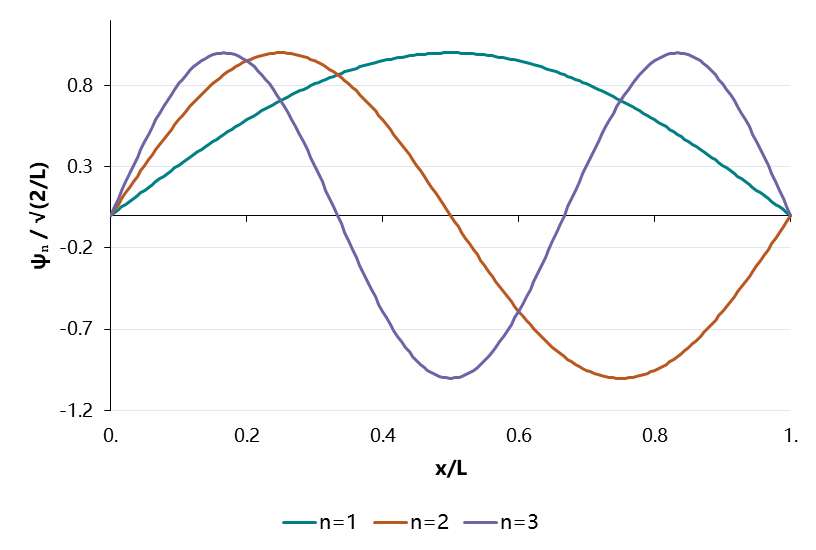
无限高壁使 ψ(0)=ψ(L)=0。阱内解为正弦和余弦组合，左端条件去掉余弦项，右端要求 sin(kL)=0，因此 k=nπ/L。
归一化给出振幅 √(2/L)，能量为 n²π²ħ²/(2mL²)。n 从 1 开始，因为 n=0 会给出处处为零的波函数，无法归一化。
第n态的密度： |ψₙ|²=(2/L) sin²(nπx/L)。 节点处概率密度为0。 求一段位置的概率，要对密度积分，不能直接读曲线高度。
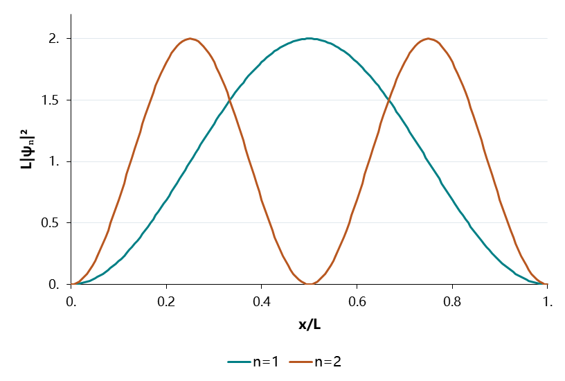
先把 ψₙ 平方得到 (2/L)sin²(nπx/L)，再在题目指定区间积分。ψ 的节点同时是概率密度零点，波腹处的概率密度最大。
n=2 时中央 x=L/2 是节点，但左右半区间的概率各为 1/2。区间概率由整块面积决定。
有限矩形势垒：E<U₀时仍可能透射。 势垒越宽、越高，透射一般越弱。 E>U₀也通常有反射；共振时可全透射。 无吸收时：R+T=1。
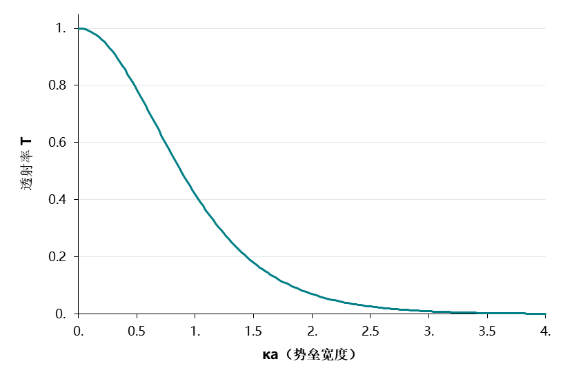
此曲线为矩形势垒E=U₀/2：T=1/[1+sinh²(κa)]。
若 E<U₀，矩形势垒内的空间解含指数项，衰减尺度由 κ=√[2m(U₀−E)]/ħ 决定。势垒有限宽时，波函数可延伸到另一侧。
宽势垒近似下，透射概率含 e^(−2κa) 因子，a 为宽度；势垒越厚或越高，透射越弱。E>U₀ 时，界面两侧波数仍可不同，因此也可能反射。
Eₙ=(n+½)ħω。 基态：ψ₀∝exp[−mωx²/(2ħ)]。 Δx=√[ħ/(2mω)]。 基态没有确定振幅；对应经典转折点为√[ħ/(mω)]。
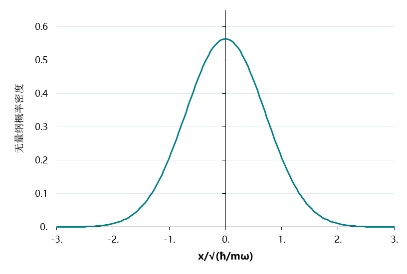
对于 U(x)=½mω²x²，束缚能级为 Eₙ=(n+½)ħω，n=0,1,2,…。相邻能级固定相差 ħω，基态能量为 ½ħω。
求能量差时零点项抵消。例如从 n=3 到 n=1 能量减少 2ħω；实际跃迁是否允许还取决于相互作用和选择定则。
主量子数 n=1,2,3,…：氢原子能级。 角量子数 l=0,1,…,n−1：|L|=√[l(l+1)]ħ。 磁量子数 mₗ=−l,…,l：Lz=mₗħ。 电子自旋 s=½，mₛ=±½；每个空间轨道可容纳两个自旋相反的电子。
n 标记壳层，l 决定轨道角动量大小 √[l(l+1)]ħ，mₗ 决定 z 投影 mₗħ。先定 n，再列 l=0 到 n−1，最后列 mₗ=−l 到 +l。
例如 3d 对应 n=3、l=2，允许五个 mₗ。角动量大小 √6ħ 与其最大 z 投影 2ħ 分别对应不同物理量。
忽略自旋或总自旋为0的正常模型： ΔE=mₗμᴮB，μᴮ=eħ/(2mₑ)。 电偶极允许跃迁：Δm=0，±1。 频移：Δν=0，±μᴮB/h。 沿场方向观察看不到π分量；垂直场方向可见三组偏振分量。
有自旋贡献时常需Landé因子，不能把正常模型套到所有原子。
在正常塞曼模型中，轨道磁矩 μz=−μB mₗ。由 ΔE=−μzB，得到 ΔE=μB Bmₗ，等间隔分裂。
光子频率由跃迁两能级的能量差决定。允许的 Δmₗ=0、±1 给三种频移，间隔为 μB B/h；上下能级本身可能各分出多条。
① 相位象限：初始速度方向是否用上？ ② 干涉条件：路程差、初相位、反射相变是否齐全？ ③ 光栅与单缝：允许级次、缺级、近似明纹是否区分？ ④ 偏振：入射是自然光、线偏振，还是p/s分量？ ⑤ 量子概率：先取模平方，再做归一化与积分。 ⑥ 模型范围：小角度、近轴、非相对论条件是否成立？
振动题用 t=0 代回 x、v 检查象限；波动题令相位恒定看传播方向；干涉题把初相位差、传播相位差、反射相位差统一到同一个符号顺序。
衍射先分清缝宽与缝距，再查明暗级次；光电先查频率是否过阈值；量子先平方再积分，最后核对总概率为 1。
中性银原子束经过非均匀磁场后出现两束。沿测量轴近似写为： F_z≈μ_z ∂B_z/∂z。 磁场梯度产生分束；不能只凭均匀磁场的存在就套用这条偏转模型。
对电子轨道运动：μ⃗_L=−[e/(2mₑ)]L⃗，μ_Lz=−m_l μᴮ；μᴮ=eħ/(2mₑ)，这里e>0是电荷量大小。 这是轨道磁矩的关系。
基态银原子电子组态为[Kr]4d¹⁰5s¹。闭壳层的角动量抵消，未配对5s电子的l=0；两束不能用m_l=−1、0、+1之类的轨道投影解释。 对自旋：μ⃗_S=−g_s[e/(2mₑ)]S⃗，g_s≈2；μ_Sz=−g_s μᴮm_s，m_s=±½。 因此自旋z测量只有S_z=±ħ/2两种结果。
校订说明：原笔记的μ_z=−m_lμᴮ属于轨道磁矩公式。它与上方Ag分束图放在一起时容易误读，不能把两者直接等同。
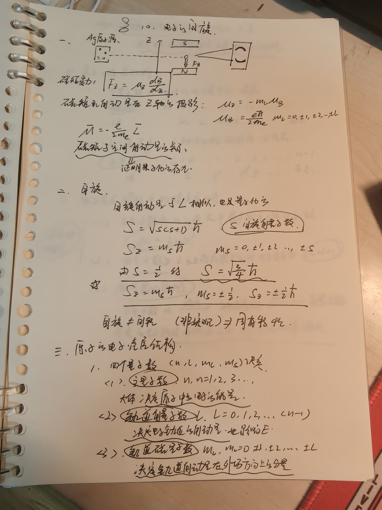
磁偶极能量 U=−μzB，由 Fz=−∂U/∂z 得 Fz≈μz∂B/∂z。磁场梯度把磁矩在 z 方向上的两种测量结果转化为两种偏转。
银原子基态未成对的外层电子轨道角动量为零，自旋投影有两种结果，因此看到两束。均匀场缺少这里用于分束的梯度。
|S|=√[s(s+1)]ħ，S_z=m_sħ。 m_s取−s、−s+1、…、s，相邻相差1；共有2s+1个值。
电子s=½，所以|S|=√3 ħ/2；m_s=±½，S_z=±ħ/2。 注意角动量大小√3 ħ/2与沿z轴的两个投影±ħ/2不是同一个量。
自旋是电子的内禀角动量；不能把电子画成表面旋转的小球来解释。一次分量测量也不是读出一根经典箭头的任意连续投影。
校订说明：笔记中一般式m_s=0、±1、±2、…、±s只适合整数自旋的列法；电子是半整数自旋，应使用m_s=−s、−s+1、…、s。
电子 s=½，角动量大小 √[s(s+1)]ħ=√3ħ/2。沿给定轴测自旋分量时，Sᶻ=mₛħ，mₛ=±½。
例如沿 z 测得 +ħ/2 后，理想情况下立刻沿同一轴重测仍得 +ħ/2；若改沿 x 测，这个 z 向本征态给两个 x 向结果，各有 1/2 概率。
n=1、2、3、…，标记主壳层。非相对论、无外场的氢原子能量只依赖n；多电子原子能量还受l、屏蔽和电子相互作用等影响。
对给定n：l=0、1、…、n−1。 |L|=√[l(l+1)]ħ。l标记亚层和轨道角动量大小；s、p、d、f分别对应l=0、1、2、3。
m_l=−l、−l+1、…、l，L_z=m_lħ。 给定l有2l+1个空间轨道；“取向”是关于量子态和投影的描述，不是经典绕核运动轨迹。
电子m_s=±½，S_z=m_sħ。 用(n,l,m_l,m_s)区分单电子态。
校订说明：本页补充量子数的定义，不要求你推导氢原子光谱或玻尔理论；老师明确排除的内容仍不安排进日任务。
依次检查 n 是正整数，l∈{0,…,n−1}，mₗ∈{−l,…,+l}，mₛ=±½。每一步都依赖上一步的范围。
例如 (3,2,−2,+½) 合法；(2,2,0,+½) 在 l 这一步就不符合条件，因为 n=2 只允许 l=0、1。
相同n属于同一主壳层：n=1、2、3、4、5对应K、L、M、N、O。 同一主壳层中，相同l属于同一亚层：l=0、1、2、3对应s、p、d、f。
给定l有2l+1个m_l值；每个空间轨道可放两个自旋相反的电子。 亚层最多容纳：2(2l+1)。 s：2；p：6；d：10；f：14。
对l=0至n−1相加： Σ 2(2l+1)=2n²。 n=1、2、3、4时，容量依次为2、8、18、32。 容量是最多可容纳多少，不代表每个原子都把每层填满，也不等于实际填充顺序。
校订说明：泡利不相容原理适用于电子等费米子，不能把“2n²”不加条件套到任意粒子系统。
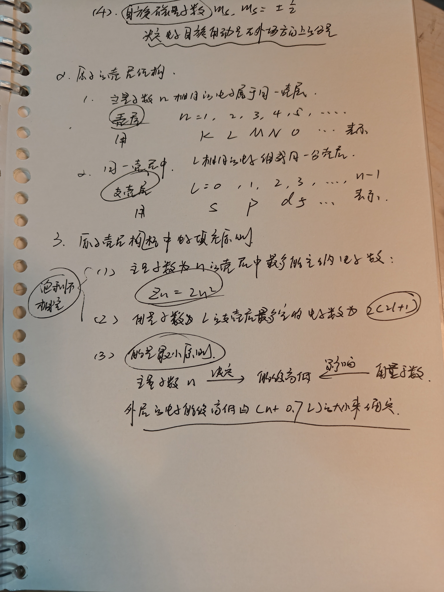
固定 n、l 后，mₗ 有 2l+1 个取值，每个轨道有两个不同的自旋投影可占据。因此一个亚层最多 2(2l+1) 个电子。
n=3 层含 3s、3p、3d，容量相加为 2+6+10=18。一般从 l=0 加到 n−1，容量为 2n²；容量与基态实际填入的数目要分开。
一个原子中不能有两个电子的四个量子数完全相同。 同一空间轨道(n,l,m_l)最多容纳两个电子，且m_s相反。
基态电子组态使原子的总能量最低。多电子原子的轨道能量不能只按n排序。
常用近似：n+l较小的亚层通常先填；若n+l相同，通常n较小者先填。 它不是无例外的精确能量定律；如Cr、Cu等基态组态有常见例外，离子排序也可能改变。
在同一组简并轨道内，基态通常先让电子以平行自旋分占不同轨道，再配对；要与泡利原理一并使用。
校订说明：图片中“n、l影响能级高低”的方向可以保留；把n+l经验规则当作所有原子的精确排序则不合适。
基态氮有 7 个电子，按顺序填成 1s²2s²2p³。每个轨道最多容纳两个自旋相反的电子；三个等能的 2p 轨道先各填一个同向自旋电子。
画轨道框时先定亚层顺序，再按泡利和洪特检查框内和框间排布。经验填充顺序会有例外，题目给出能级顺序时以题给为准。
你已说明原子核部分尚未记录。 本次已补充自旋、斯特恩—盖拉赫实验和电子壳层结构；这两页属于原子物理，不是原子核笔记。 后续收到原子核笔记或课程范围后，沿用同一图解版式补充。